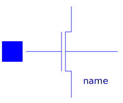
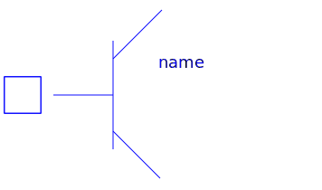
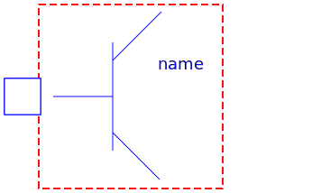
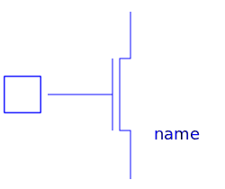
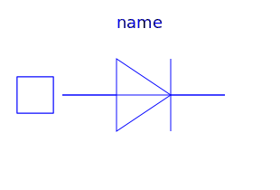
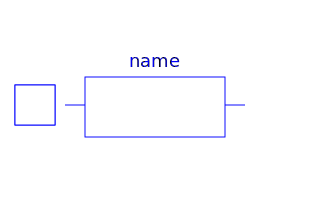
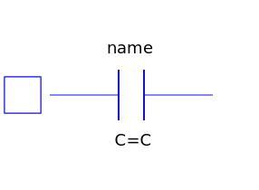

The package Internal contains functions and auxiliary models that are necessary for the Spice3 models. The package should not be used by the users of the Spice3-library.
| Name | Description |
|---|---|
|  MOS | Metal-Oxide Semiconductor Field-Effect Transistor |
| Record with technology parameters (.model) | |
| MOS2 | Metal-Oxide Semiconductor Field-Effect Transistor |
| Record with technology parameters (.model) | |
|  BJT2 | Bipolar junction transistor |
| Record with technology parameters (.model) | |
|  BJT | Bipolar junction transistor, obsolete, use model BJT2 |
| Record with technology parameters (.model), obsolete model, please use ModelcardBJT2 | |
|  JFET | Junction Field-Effect Transistor |
| Record with technology parameters (.model) | |
|  DIODE | Diode model |
| Record with technology parameters (.model) | |
|  R_SEMI | Semiconductor resistor |
| Record with technology parameters (.model) | |
|  C_SEMI | Semiconductor capacitor |
| Record with technology parameters (.model) | |
| General constants of SPICE simulator | |
| Equations for semiconductor calculation | |
| Basic records and functions | |
| Device Temperature | |
| Functions and records for MOSFETs | |
| Records and functions for MOSFETs level 1,2,3,6 | |
| Records and functions for MOSFETs level 1 | |
| Records and functions for MOSFETs level 2 | |
| Records and functions for diode model | |
| Records and functions for semiconductor resistor model | |
| Records and functions for bjt model | |
| Records and functions for bjt model, obsolete | |
| Records and functions for Jfet | |